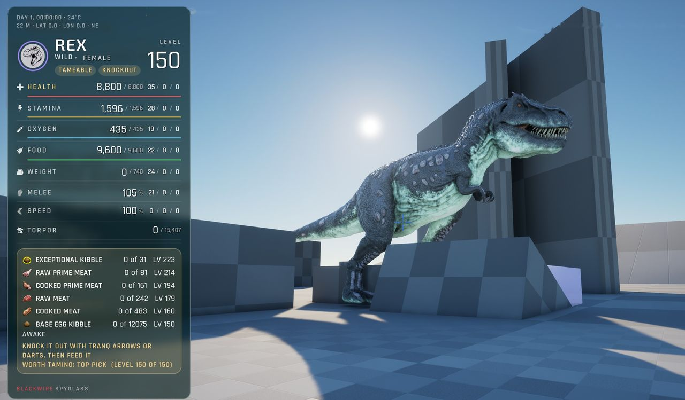
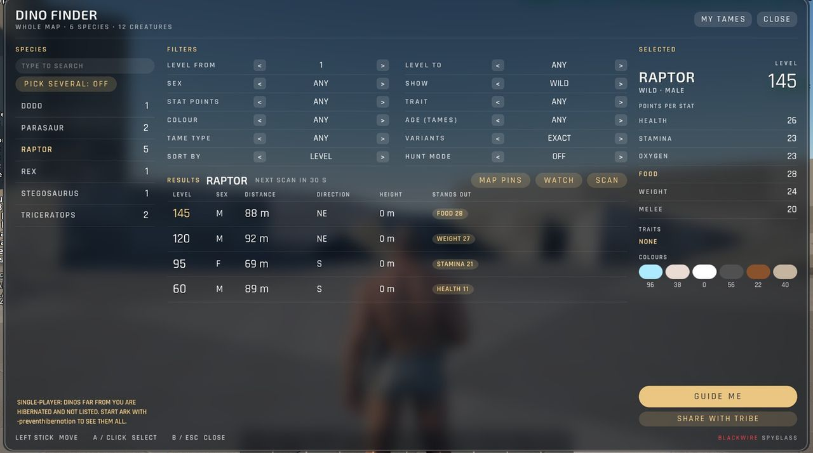
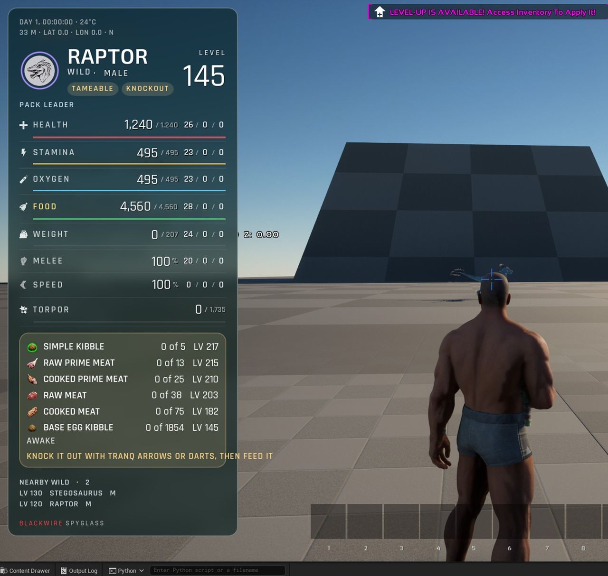
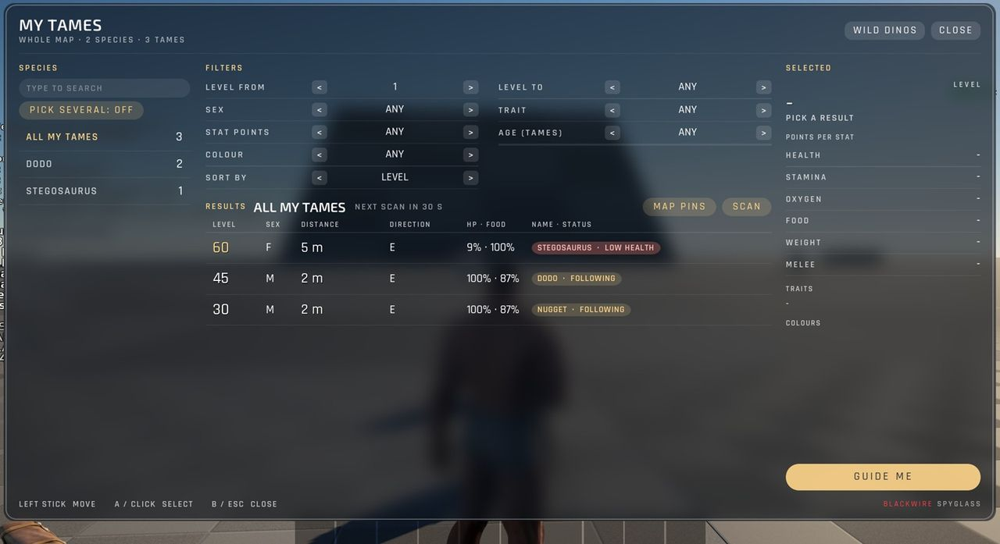
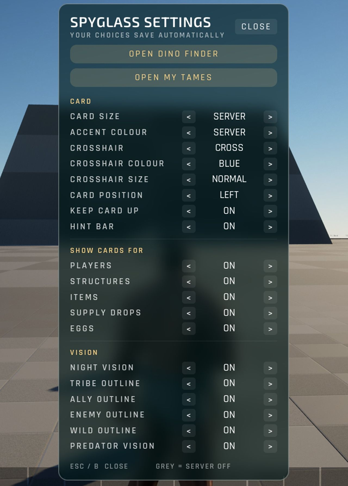
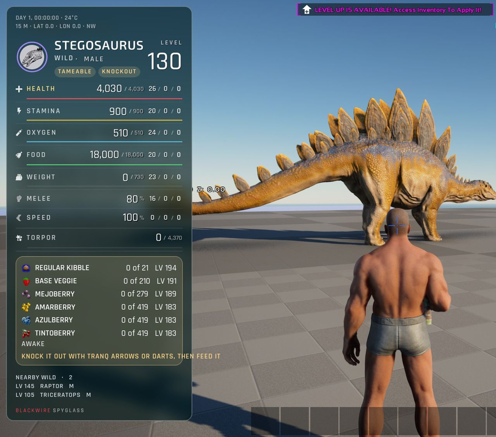

Structure info: owner, decay timer and what is inside storage boxes.
Night vision and colour-coded creature outlines.
A worth-taming rating on wild creatures, and a side-by-side stat compare.
Dino Finder: search the whole map by creature, level, stats, colours and more.
My Tames: find your own and your tribe's tames.
02 · full_guide
How it works.
Numbers are the defaults. Server owners can change them in the settings below.
What you can look at
Craft it at level 7, equip it and aim (Right-click / LT / L2). It reads targets up to 800 m away.
Target
The card shows
Creatures
Level, owner, stats, mutations, torpor, taming food, breeding, imprint and buffs. Wild ones get a worth-taming rating.
Players
Who they are, with their info.
Structures
Owner, decay timer and what is inside storage boxes.
Eggs, loot and drops
Eggs, dropped items, loot bags and supply drops.
Night vision
See in the dark through the scope.
Outlines
Colour-coded creature outlines out to 150 m.
Compare
Put two creatures side by side to compare their stats.
Dino Finder
Search the whole map by creature, level, stats, traits and colours. Filter by level, sex, age, tame type and variant. Up to 500 results, with 30 seconds between scans.
Watch and pins
Watch a search and get told when a match shows up. Place up to 20 map pins and share finds.
My Tames
Find your own and your tribe's tames.
Your look
Hold R / X / Square for settings: card size, accent colour and crosshair style. Each player sets their own.
Owner controls
Owners can hide any part of the card, or make the Finder admin-only, level-locked or limited to listed players.
03 · how_to_use
How to use it.
Craft the BlackWire Spyglass (level 7), equip it and look with Right-click / LT (L2). Hold R / X (Square) for settings.
04 · in_game
In game.

Creature card

Dino finder

Tracking and nearby

My tames

Player settings

Herbivore card
05 · server_settings
Server settings.
Every line is optional. Change what you want and copy the block into GameUserSettings.ini.
Info card (what the spyglass shows) 17 settings
Vision modes 3 settings
Look (server default; players can still change their own) 5 settingsDino Finder: who can use it 6 settings
Dino Finder: scans 5 settingsDino Finder: features (True turns that feature off) 9 settings
Dino Finder: filters (True removes that filter) 5 settings
 BLACKWIRE
BLACKWIRE